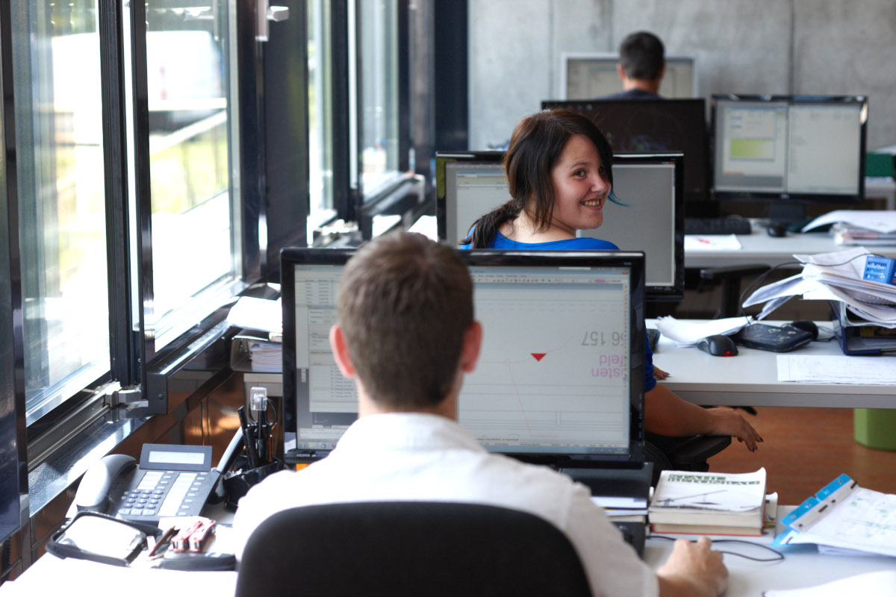

Innovation
PSP is committed to research and development. Since our first monitoring system, iBWIM, was introduced in 2011 we have continuously developed and improved our systems.
In 2018 we launched our Structural Health Monitoring (SHM) system, PSP Logger and are currently expanding our range of precision, low drift sensors.
Our first commercial product, the BAUT infrastructure database, provides a framework within which information about a structure, be it numerical, photographic or descriptive, can be stored and accessed.
BAUT is still in service with the Austrian roads authority, ASFINAG, after 15 years.
We also collaborate with academic and research institutes, both within Carinthia and beyond, to develop novel sensors and apply advanced pattern recognition algorithms.
In addition to our development work we are also active in academic research, and have been members of several research consortia. We continue to publish novel work at academic conferences.